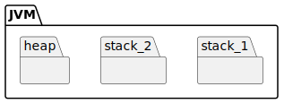

Runtime Data Area
Runtime Data Area 是存放数据的，在逻辑上将内存划分为 线程栈（thread stacks）和堆内存 （heap）两个部分。 如下图所示：

堆内存
堆内存又称为“共享堆”，堆中的所有对象，可以被所有线程访问, 只要他们能拿到对象的引用地址。
如果一个线程可以访问某个对象时，也就可以访问该对象的成员变量。 如果两个线程同时调用某个对象的同一方法，则它们都可以访问到这个对象的成员变量，但每个线程的局部变量副本是独立的。
-
堆
-
用来放置 Java 对象实例
-
堆是垃圾收集器重点照顾的区域
-
堆内空间还会被不同的垃圾收集器进行进一步的细分，如年轻代和老年代
-
年轻代是大部分对象创建和销毁的区域
-
分为新生代
Eden区和两个存活区Survivor区（From Survivor、To Survivor），比例 8:1:1
-
-
老年代是放置长生命周期的对象或者对象太大，完全无法在新生代找到足够长的连续空闲空间，JVM 就会直接分配到老年代
-
-
-
非堆（aka 方法区、永久代、元空间）
-
用于存储已被虚拟机加载的类型信息、常量、静态变量、即时编译器编译后的代码缓存等数据。
-